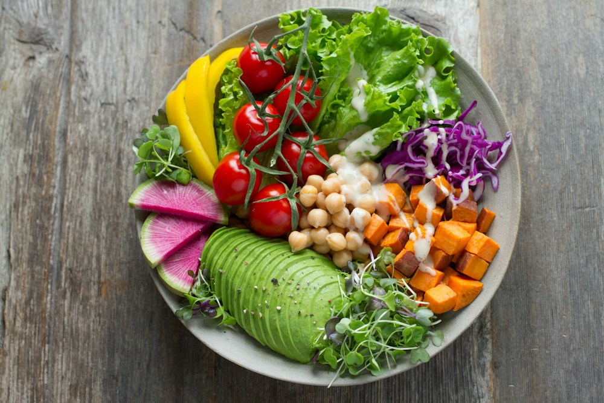

Biết hôm nay có thể chi bao nhiêu
Theo dõi số tiền còn lại và định mức mỗi ngày sau khi cập nhật chi tiêu.
Từ ngân sách đến bữa cơm mỗi ngày. Lên thực đơn, đi chợ có kế hoạch và tận dụng những gì còn trong tủ lạnh.

Giữ những thông tin cần thiết trong cùng một không gian.
Theo dõi số tiền còn lại và định mức mỗi ngày sau khi cập nhật chi tiêu.
Xem thực đơn mẫu theo bữa và gom nguyên liệu cần mua thành một danh sách.
Nhìn rõ nguyên liệu còn lại, lượng có thể dùng và những món sắp hết hạn.
Chọn số tiền, số ngày và số bữa để hình dung kế hoạch phù hợp.
Xem thực đơn, kiểm tra nguyên liệu đã có rồi chốt danh sách cần mua.
Ghi lại tiền đã chi, xem đồ còn lại và bắt đầu ngày tiếp theo.